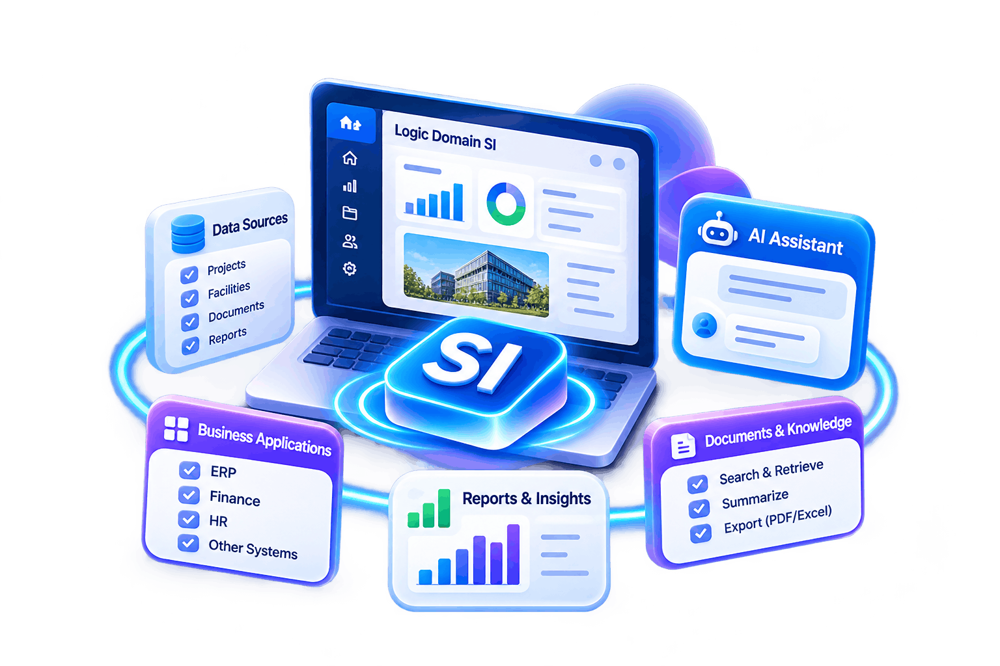

Natural-language assistance
AI Chatbot
Ask questions in everyday language, explore relevant business information, and get helpful responses through one intuitive SI interface.

Make your existing system intelligent and let Logic Domain custom-developed Super Intelligence (SI) modules to integrate seamlessly with your current modules and extend their capabilities.
Logic Domain SI goes beyond traditional AI assistance by connecting users with valuable business information and insights. Through natural language, users can retrieve data across connected modules, generate meaningful summaries, and export information to PDF or Excel. SI simplifies complex processes, reduces manual effort, and helps teams work smarter, faster, and more efficiently.
Key Highlights

Explore the intelligent technologies behind Logic Domain SI, designed to connect information, understand context,
and deliver more relevant, personalized experiences across supported business environments.
Ask questions in everyday language, explore relevant business information, and get helpful responses through one intuitive SI interface.
Coordinate specialized AI capabilities and multi-step processes to route requests to the right tools and bring results into one consistent experience.
Specialized AI agents collaborate on complex requests, coordinating different tasks to produce more complete and useful responses.
RAG brings relevant information from authorized sources into the response process, helping SI answer with stronger context.
Find information based on meaning and relationships, even when your question uses different wording from the source data.
Make search and chatbot interactions more relevant using supported user preferences, context, and permitted information.
Logic Domain SI goes beyond traditional conversational assistance by connecting intelligence directly with your business applications and information.
Designed around business operations, project information, and practical user requirements rather than general-purpose conversations alone.
Use natural-language interactions and custom queries to discover specific information without relying exclusively on predefined reports.
Explore relevant and necessary information from supported modules, submodules, and business resources through one intelligent interface.
Access SI within supported business platforms, bringing intelligent assistance and results into the applications your teams already use.
SI transforms everyday requests into meaningful information by connecting your questions with
relevant business data.
Ask questions, request summaries, or find information in everyday language through your supported application.
SI understands your intent to provide answers, retrieve records, summarize data, or process supported custom queries.
SI retrieves relevant information from supported modules, documents, and data sources based on user permissions.
SI delivers relevant answers, summaries, records, and query results, reducing unnecessary navigation.
Logic Domain SI extends across supported applications, business systems,
modules, and workflows—delivering consistent intelligent assistance wherever you work.
SI can be integrated into compatible websites, internal portals, and tailored enterprise applications through our implementation services, subject to the system's integration capabilities.
Find records and relevant information across authorized, connected modules and submodules using natural-language requests, without manually navigating each section.
Extend intelligent assistance across supported software solutions and other applications. Users can interact with SI within the environment where they already work.
Access information and guidance throughout supported processes—from reviewing records and understanding data to preparing summaries and making informed decisions.